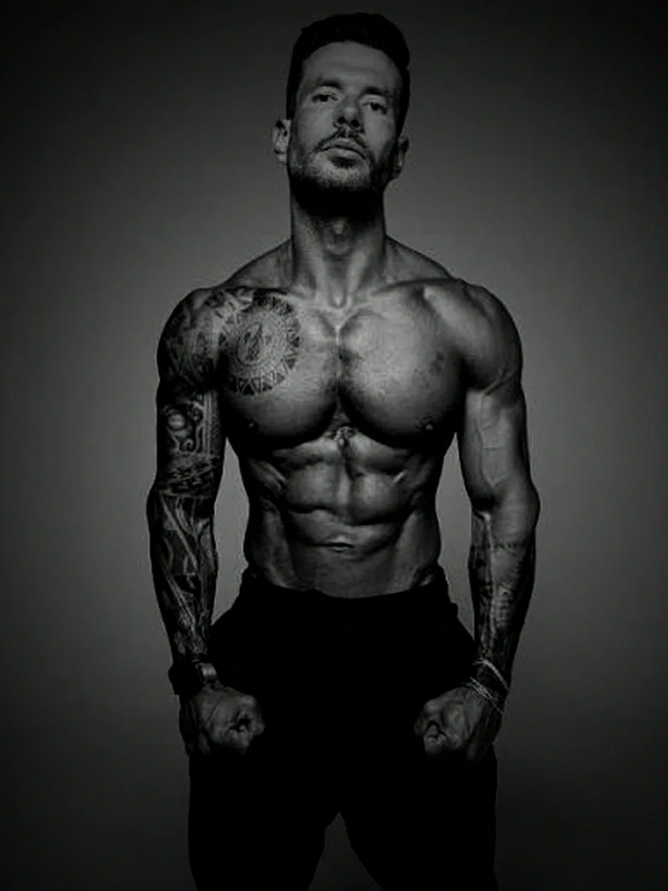
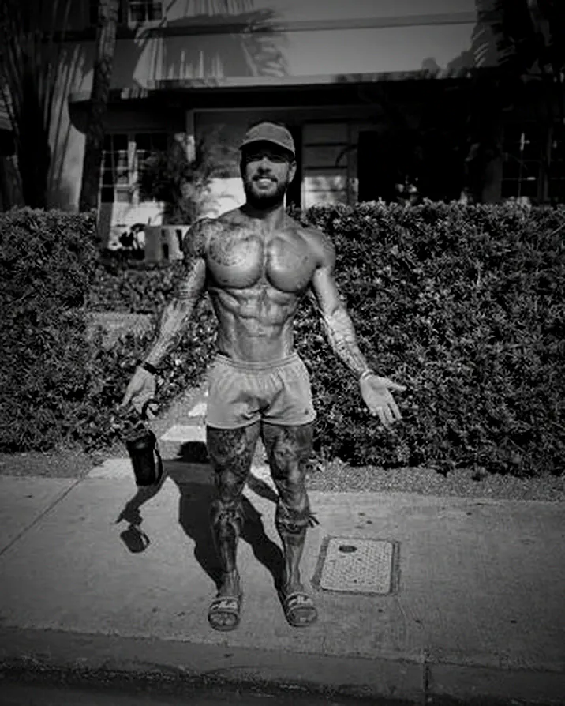

←→ navegar
Case de marketing · Ecossistema Viana
Não falta produto no ecossistema Viana. Existem 13 peças, em 10 domínios, sob 6 nomes de marca. O trabalho não é inventar. É organizar, nomear e conectar.

Ato 1 · Diagnóstico · 01
Levantei cada peça do ecossistema e sob que nome ela aparece. Em rosa, os seis nomes de marca diferentes.
A jornada real de quem compra hoje
Não falta produto.
Falta um guarda-chuva.
Ato 1 · Diagnóstico · 02
Auditei as três propriedades oficiais: HTML servido, robots, sitemap, dados estruturados e peso das imagens. O achado principal de cada área está na tela. O clique traz a evidência.
Quase tudo isso
cabe em 90 dias.
Ato 2 · Arquitetura · 03
A marca já escolheu a metáfora quando se chamou de Alfaiates de Shapes: do pronto para vestir até o sob medida. Cinco degraus, e nenhum precisa ser criado.
Nada precisa ser inventado.
Precisa ser nomeado e ligado.
Ato 2 · Arquitetura · 04
Sete métricas, revisão quinzenal, plano em vídeo. Isso é sistematizável, ensinável e auditável, ou seja: pode virar marca. Uma pessoa não pode.
Método Viana
O ativo · a promessa · o que se compra
Movimento 01
Nomear o métodoHoje ele não tem nome. Sem nome não vira ativo: não dá para certificar nem defender.Movimento 02
Subordinar todos a eleMarcos passa a ser o criador. Os especialistas, formados nele. Mesma hierarquia para os dois.Movimento 03
Torná-lo visívelAs sete métricas existem só dentro de uma imagem. Precisam de página e de texto real.Movimento 04
Provar com o timeCada case assinado pelo especialista. Os seis nunca foram nomeados publicamente.Isso abre mão dos 217 mil seguidores do perfil pessoal como alavanca direta de venda, e é uma perda real. A mitigação é que ele não vira institucional: passa a ser o maior evangelista do método, não o produto. A métrica que prova: percentual de matrículas fechadas sem o Marcos aparecer na peça. Meta de 40% em doze meses.
Ato 3 · Novas iniciativas · 05
A Batalha de Shapes já existe, já roda todo mês e é conduzida pelos treinadores do time. Falta dar a ela a função que ela pode ter.
Trabalho 1 · Entrada
Cozinha → Batalha
Participar exige assinatura ativa da Cozinha. Dá motivo datado para pagar os R$ 14,90, que hoje é decisão adiável para sempre.
Trabalho 2 · Subida
Batalha → Consultoria
O prêmio é bolsa na consultoria, e todo finalista recebe condição na turma seguinte. A premiação vira mecanismo de conversão.
Trabalho 3 · Prova do time
Batalha → Autoridade
Como quem conduz são os treinadores, cada edição é uma vitrine deles. É o veículo mais natural para transferir autoridade.
A campanha deixa de ser despesa e vira a engrenagem do funil
12 edições por ano · 12 vitrines dos treinadores · conteúdo que a empresa não precisa produzir
Ato 3 · Novas iniciativas · 06
Quase toda empresa está no nível zero e acha que está fazendo IA. A diferença entre ferramenta e vantagem competitiva não é o modelo. É o dado que só você tem.
Ato 3 · Novas iniciativas · 07
Tudo até aqui é horizonte 1: organizar o que existe, e cabe em doze meses. Isto é horizonte 2, e só faz sentido depois. Quatro produtos, cada um puxado por um movimento de mercado.
da população brasileira usa análogos de GLP-1 em 2026, acima da média global de 3,7%.
Euromonitordo peso perdido com semaglutida veio de massa magra, no estudo STEP 1.
A contramedida é treino de forçamovimentados pelo mercado fitness brasileiro, crescendo 9,5% ao ano até 2030.
Penetração de apenas 7%é o mercado global da menopausa, com o Brasil liderando a América Latina até 2030.
Manual do MS publicado em 2026Nenhum entra nos doze meses.
Lançar antes de conectar
é repetir o erro.
Ato 4 · Lançamento · 08
Cinco campanhas, cada uma com o material que ela exige e o benchmark que sustenta a aposta. Tudo produzível com o time que já existe.
Ato 5 · Execução · 09
Arraste as premissas. O modelo recalcula na hora e ignora o nível mais caro, então é piso e não teto.
Fixos, apurados nos ativos públicos:
Cozinha R$ 14,90/mês · Consultoria R$ 1.152/ciclo
Base 650 alunos por ciclo · 4 ciclos/ano · Batalha 12 edições/ano
Nível 4 fora do modelo, por não ter preço público
Ato 5 · Execução · 10
A ordem é deliberada: primeiro medir e conectar, depois nomear, só então escalar sem o fundador.
Onda 1 · Meses 1 a 3
Onda 2 · Meses 4 a 7
Onda 3 · Meses 8 a 12
Nível 0 · Grátis
Leads por mês
Nível 1 · Cozinha
Churn mensal
Nível 2 · Batalha
Conversão para o nível 3
Nível 3 · Consultoria
Renovação de ciclo
Nível 4 · Com o Marcos
Ocupação da agenda
A métrica do ano
Vendas sem o Marcos na peça
Ato 5 · Execução · 11
Posicionamento, método e voz estão maduros e são difíceis de copiar. O que falta é arquitetura, e arquitetura é decisão, não talento.

13
peças em 10 domínios e 6 nomes de marca. Nenhuma precisa ser criada, todas precisam ser conectadas.
1
marca acima delas: o método com nome próprio, com fundador e time igualmente subordinados.
6
consertos no que já existe, quase todos executáveis nos primeiros 90 dias.
40%
de vendas fechadas sem o Marcos na peça em doze meses. A métrica que prova que a marca do método está de pé.